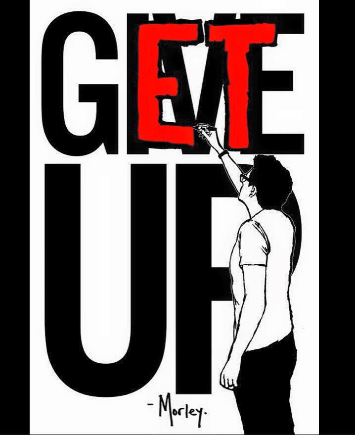
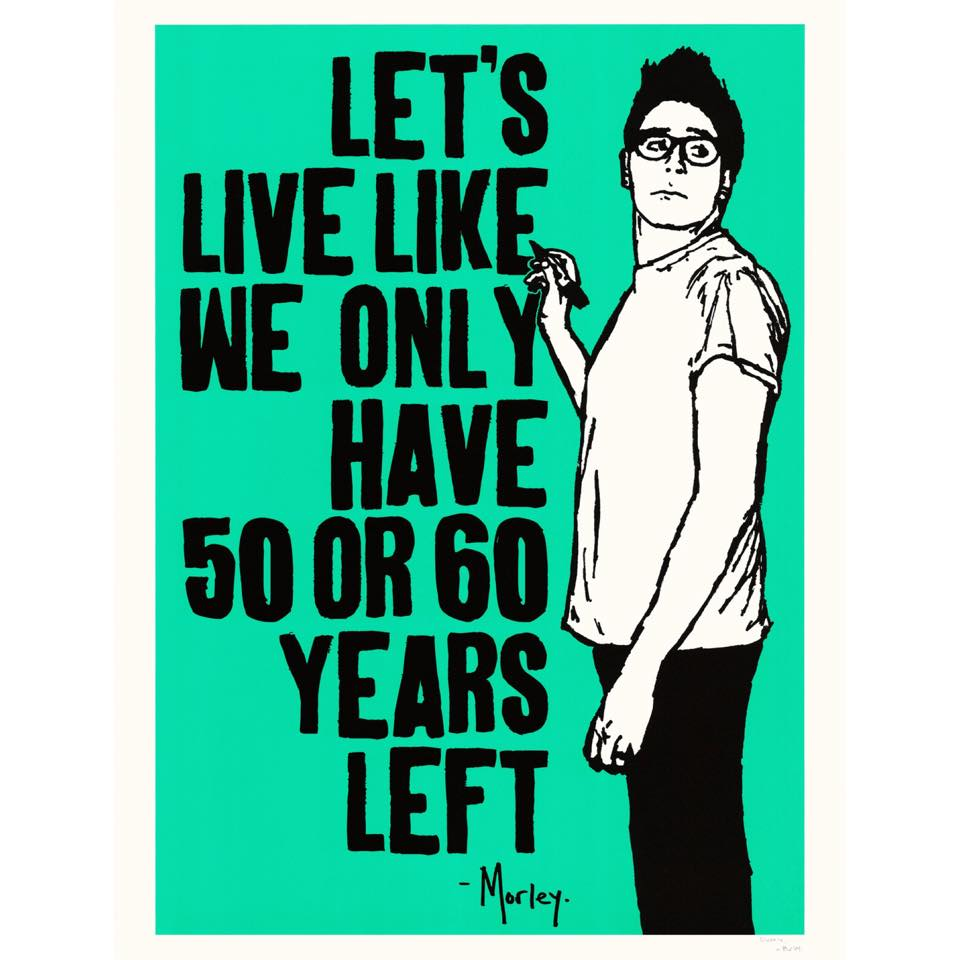
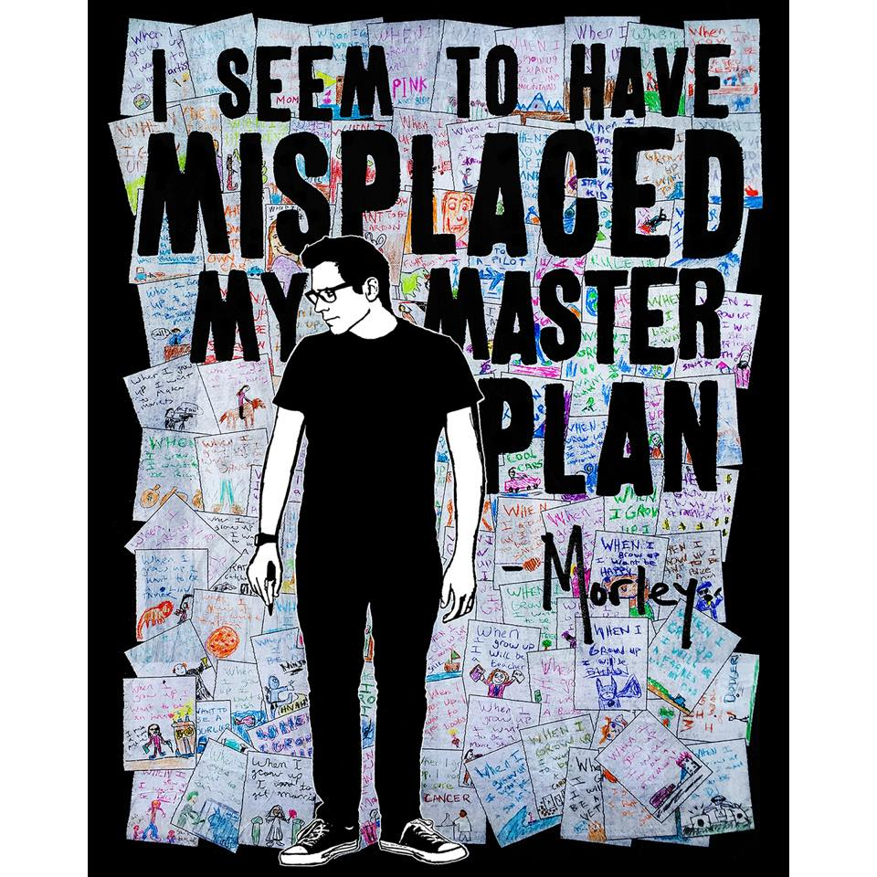

Q&A: MORLEY
LA based street artist Morley didn’t know much about street art growing up in Iowa. To him street art consisted of illegible scrawls on buildings or street signs. It wasn’t until he went to college in the street art haven of New York that he was exposed to work of that nature that could truly be considered “art.” It also wasn’t until college that Morley explored and began to consider himself an artist. With a love for writing and illustration up his sleeve, he took to the streets with his recognizable witty phrases and sayings accompanying a realistic cartoon of himself. He doesn’t make your typical street art, he makes art with a message, literally and figuratively.
AMFM: How did you get into street art? What was the first Morley piece you ever made?
MORLEY: I came from Iowa, and in Iowa, when i was growing up at least, there wasn't a lot of street art. I sort of like to say that street art I saw in Iowa were curse words carved in the bathroom stall doors, so when I moved out to New York and went to college out there, it was like a revelation to me. I finally started seeing art that was created to be specifically for the streets and it changed my whole perspective on what art can be.
AMFM: What's the first Morley piece you did? You remember what it said?

AMFM: So you do these kind of pieces with life sayings about love and humorous quotes, what are the messages you try to get across and incorporate into your work?
MORLEY: When I went to art school, I went as a screenwriting major and I never thought of myself as someone who had any skill in visual art. It was going to art school that showed me all the different kinds of art there were. There were photographers; there were illustrators; there was a lot of art. I got to see all these different kind of art forms, and it made me realize that maybe I don't have to be the best painter in the world in order to put something out there that people might respond to. The sayings that I put out there are things that I think people, when they're driving by at 35 mph down the street, might make people think, bring a certain amount of humor, or a certain nature of cuteness to their day or whatever. The main goal I always have with my work is really to connect with someone who is going through some struggle or some sort of trial in their life and can use some encouragement. I think the best drug in the world is the drug of relief, and it's the relief that comes when you realize you're not the only one who feels a certain way, or experiences something. We can live out our lives and feel like no one understands what we’re going through and the moment you find someone and like they “get it get it,” there's this feeling that washes over you of like maybe I'll be okay. If I'm not the only one, maybe we're all in this together. That's what I aim for in my sayings. I try to think of something that would matter to me...that would leave some lasting impact on my life, and I try to start there and see if i can make difference.AMFM: So you have a background in writing?
MORLEY: Yeah I love writing, and I love poetry. It’s beautiful and wonderful. There's a famous story that someone once challenged Ernest Hemingway to write a story in six words. People said “I don't think you can do it,” and he was like “I'll try,” and he came back with the story. he wrote “For sale, baby shoes, never worn.” To me when I hear something like that I think he's requiring the person to fill in everything and to bring their own guesstimation as to what this story was about, to bring their own experience to it. That's what I try to do - have brief poetic sayings or things, and it really does require the person who's seeing it to fill in all the gaps and say what does that mean to me. A person who's never known rejection or been frustrated or disappointed will probably think my stuff is pretty boring. I think to people that can understand where I'm coming from can see it as something more profound than that.
AMFM: You often insert in yourself in your art unlike most street artists who would prefer to remain anonymous. Why was that something you wanted to do and what has been the response?
MORLEY: For me I think it was twofold. The first was that I wanted to create a relationship between the person looking at the art and the artist. Music for example, you get a relationship there because you see the person perform. You see John Lennon or Bob Marley and you know even if you have no actual physical connection with them, you can see them on a TV screen or whatever and feel that they are a person and appreciate that, so you create a human intimate connection. Filmmaking you can feel a connection through a filmmaker, but it's filtered through all the people they are collaborating with. With photography, you are seeing a beautiful image, but not necessarily connecting with the photographer, so I thought, is there a way to create that kind of connection, that kind of bond, between that person that's looking at something? I do, so I thought, why not put myself in it? I feel like you earn the privilege of speaking into someone's life when you are open, honest, and vulnerable with them. No one wants to hear advice from someone they don't feel is being real with them, or struggled with similar things. I thought if I put myself in my work it might create that connection more than if I was a logo or a brand. Secondly, I feel there’s artists like Banksy that are anonymous, and they create a connection that is based on an urban legend, folklore or a myth. Banksy is an idea. He's obviously a real person, but the idea of Banksy is different than the actual person. I'm not cool enough to pull that off anyway...How about I embrace my ‘not very cool guy’ truth and be like there’s gotta be somebody else out there that’s also not cool, like this is guy I can relate to...I always think about growing up, and all my friends loved Nirvana, but I’m not Kurt Cobain; I don’t see myself as him. I think his music is amazing, but like for me, I was into Weezer. I was guy with the glasses, like that’s me, that’s the guy I relate to. He sings about looking like Buddy Holly and I was attracted to that kind of a thing. I wanted to bring the same sort of feeling to my work. I didn't want people to think I was the cool and clever Banksy guy, I wanted to be dopey dude in glasses standing next to something and desperately sprawling against the wall.

AMFM: Have you ever gotten into trouble doing street art in LA?
MORLEY: I have gotten in trouble a couple of times, but I've never gotten arrested. I've been fortunate and it's helpful to be respectful to police officers that stop me. It's also that the places I put my stuff in aren't high in damage - I always try to be aware. I never want someone to be like ‘oh what a positive message told in a destructive way’ that wrecks someone’s day that owns that store or something. I mostly do borders of buildings, and then when they sell the building they take the board or temporary walls down. Those are the places I like to go to first and foremost. There are ways of staying out of trouble, and I think it is important that you have an air of authority. I always say it’s better to ask for forgiveness than ask for permission.AMFM: How do you feel about this idea of impermanence with your work?
MORLEY: The idea of permanence is intimidating. I'm an artist that works mostly with paper and glue, and it's something that's not permanent in the slightest bit. The idea of something that can be here for a while is kind of intimidating. I think that to me what I think is exciting is the idea of creating something that is interactive that people can revisit and appreciate for themselves anytime. A lot of time with galleries there's some velvet rope. I like art that you can touch, that has texture, that you can physically interact with. That's one reason why I love street art.FOR MORE FROM MORLEY:
INSTAGRAM / WEBSITE